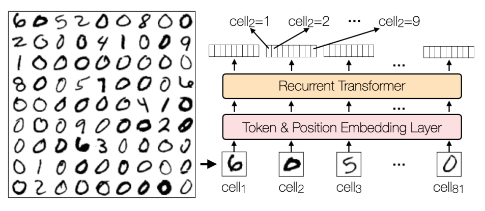
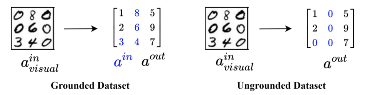
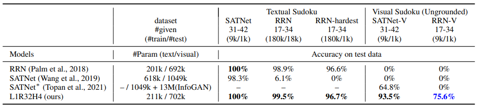
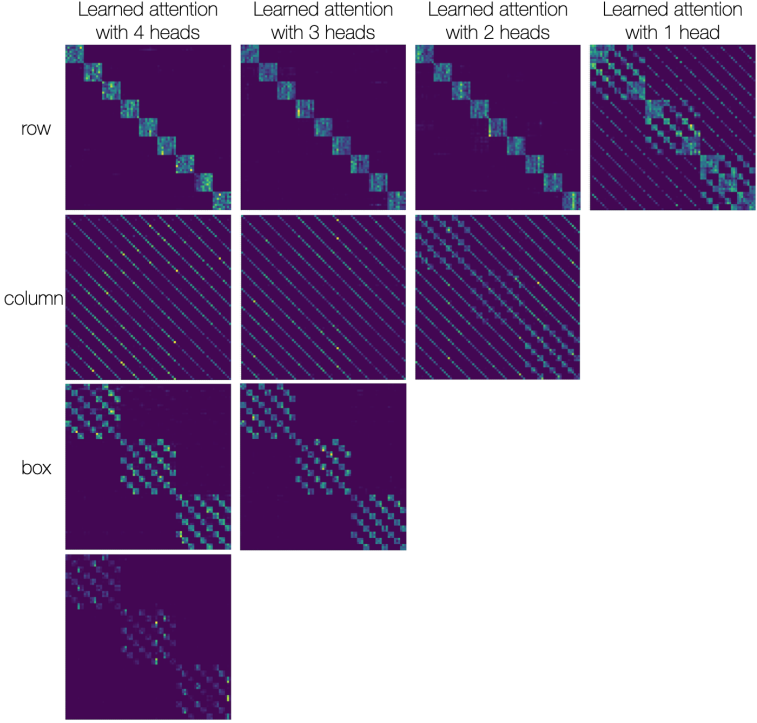
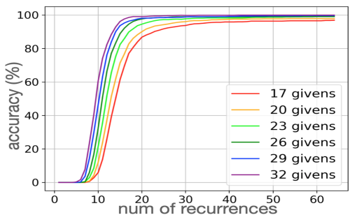
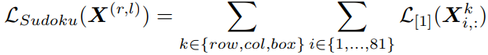
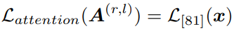
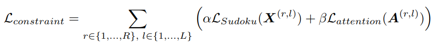
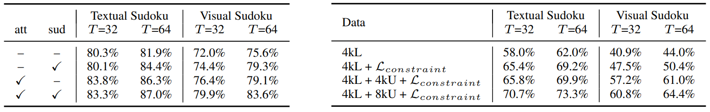

Learning to Solve Constraint Satisfaction Problems with Recurrent Transformers

Constraint satisfaction problems (CSPs) are about finding values of variables that satisfy the given constraints. We show that the Transformer model extended with recurrence is a viable approach to learning to solve CSPs in an end-to-end manner, having clear advantages over the state-of-the-art methods such as Graph Neural Networks, SATNet, and some neuro-symbolic models. With the ability of Transformers to handle visual input, the proposed Recurrent Transformer can straightforwardly be applied to visual constraint reasoning problems while successfully addressing the symbol grounding problem. We also show how to leverage deductive knowledge of discrete constraints in the Transformer's inductive learning to achieve sample-efficient learning and semi-supervised learning for CSPs.
We use a recurrent encoder-only model without masking attention. The unrestricted attention allows the any element to pay attention to any other element, and the recurrence encourages a general reasoning algorithm to be learned.

We use the ungrounded visual Sudoku dataset (right) which does not leak any supervision of given Sudoku elements. This means that the recurrent transformer must ground the Sudoku element images using just the solution.” (last row).
We feed eighty-one 28x28 pixel images of a Sudoku board into the recurrent transformer, which has a small convolutional neural network in the embedding layer.

We achieve state-of-the-art performance in both textual Sudoku and visual Sudoku. We also apply our method to 16x16 textual Sudoku, Shortest Path, and Nonograms (see paper for more details).

We can plot the learn attention scores for some board which represent row, column and box constraints associated with Sudoku. These constraints are captured with 3 heads, while when training with only one head, some the constraints are combined into one head.

Adding more recurrent steps, even more than what was trained for gives better performance. This model was trained with 32 recurrent steps, but during inference we can apply more steps (up to 64 shown here). The number of recurrences required is proportional to the hardness of the problem, with the easier boards with more givens not needing as many steps and the harder boards needing increasingly more.


We inject constraints into the recurrent transformer using straight-through estimators. Additionally we add attention constraints.

We combine this into a constraint loss and get improvements combining them with the supervision loss (left) and using the constraint loss with unlabeled data provides a performance increase in a semi-supervised setting.
